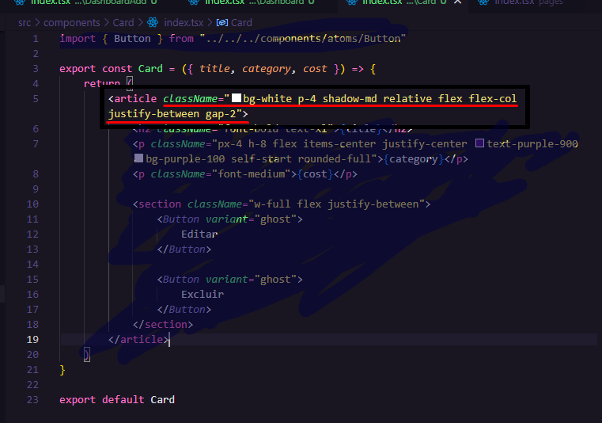
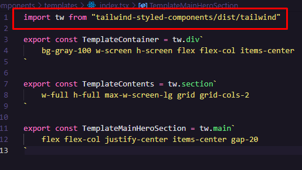
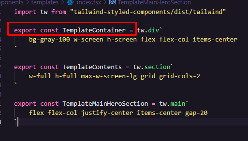
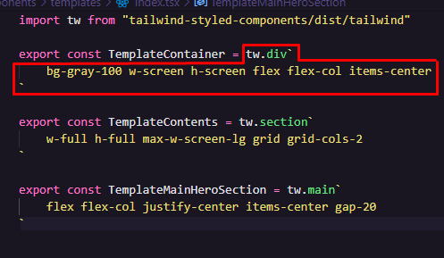
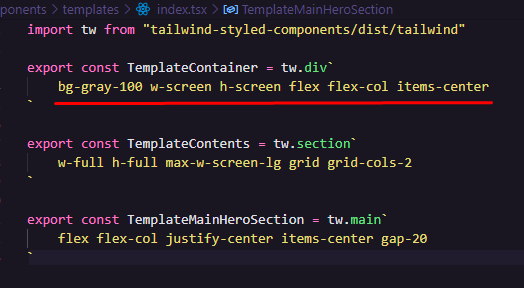
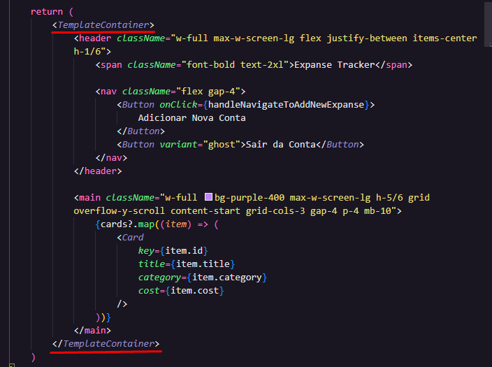

Refatorando a estilização das tags com o Tailwind + Styled-Components
Quando uma tag dentro da Aplicação fica muito extensa por causa do Tailwind, há uma forma de extrair esse estilo pra um lugar separado (onde conterá várias "extrações" dessas).
- Vemos aqui que há um "className" muito longo:

Preste atenção! - Criamos uma pasta apenas para esses templates:

- Observe que há um arquivo
index.tsxdentro de templates. Nesse arquivo, inicialmente é feito a importação dotw:
 - Então, é exportado um novo componente com um nome semântico. Esse componete irá substituir a tag que contém o className longo então atenção pro nome que escolher pro componente.
 - Logo depois vem um tw.tag``

ATENÇÃO: a palavra 'div' será subtituida pela tag que está sendo estilizada com o longo className - Dentro dos apóstrofos vai ficar todo o estilo que estava dentro do className:
 - Agora, no lugar da 'tag + longo-ClassName', é só chamar o componente criado dentro do Templates:

OBS: Não se esqueça de importar o novo componente: